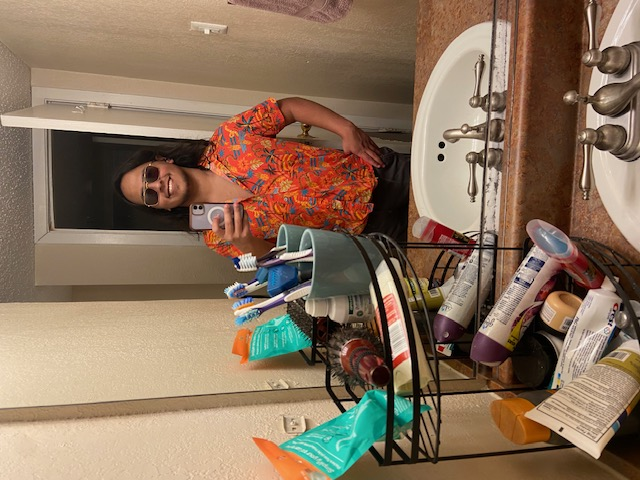
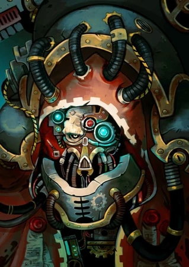
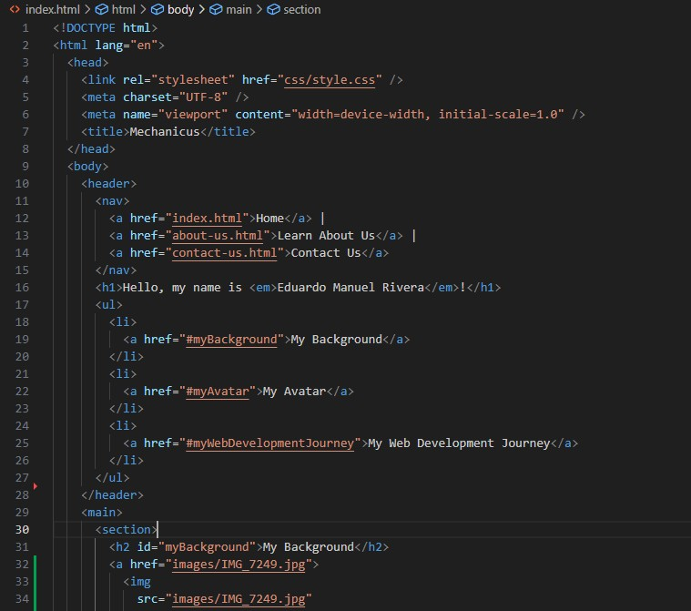

My Background
I was born on May 9th, 2005, in Irving, Texas. I’ve lived there for most of my life, and it’s where I grew up and where many of my interests began to develop. One of my biggest hobbies is playing video games, especially turn-based games and CRPGs (computer role-playing games). I love how they combine deep stories, strategy, and world-building. What I enjoy most is making choices that shape the game’s world. Outside of gaming, I’m really interested in mythology. I’ve always been drawn to myths from different cultures, especially Greek and Japanese. I enjoy the stories, the symbolism, and what they reveal about the people who created them. My favorite mythological creature is the Manticore from Persian mythology. It's a mix of a lion’s body, a human face, and a spiked tail (sometimes with dragon wings). History is another major passion of mine. I’m curious about how the world became what it is today, and I love learning about different civilizations. Whether they're from Africa, Asia, Europe, or the Americas, I’m interested in how people lived, what they believed, and how their societies worked. Overall, I’m someone who values learning and creativity. Whether through games, myths, or history, I love exploring different worlds, real or imagined, and understanding what makes them unique. These interests continue to shape how I see the world and what I want to learn moving forward.
My Avatar
I chose this image as my avatar for a few reasons. At first, I considered just using a regular photo of myself, but it felt too boring. I wanted something that showed more personality and creativity. This image does that. If you hover over it, you’ll see who the character is, but fans of Warhammer 40k might recognize it instantly. The avatar is from the Adeptus Mechanicus, a faction in Warhammer 40k obsessed with machines, technology, and the worship of knowledge. I’ve been playing a game that features them heavily, and their aesthetic really intrigued me. They treat technology almost like a religion, which I found both unique and thought-provoking. Other than just looking cool, this image weirdly relates to the career path I've chosen. I’m currently studying for a Web Developer AAS degree, learning to build websites and digital tools. I spend a lot of time thinking about how technology works and how to use it creatively. In a strange way, I see a connection between my interests and the Adeptus Mechanicus, both focused on machines, logic, and innovation. This avatar shows my love for gaming and tabletop lore, but it also hints at my deeper interests in tech and design. It’s an interesting and subtle way to express both my hobbies and my goals.
My Web Development Journey
I’m currently enrolled in a Web Developer AAS (Associate of Applied Science) degree program, where I’m learning how to build functional, user-friendly websites. The coursework covers HTML, CSS, JavaScript, Linux configuration, Python, and back-end development. I’ve always been interested in technology, especially how websites and apps work behind the scenes. For a long time, I wanted to learn to code, but the amount of information online was overwhelming. With so many languages, tools, and paths to choose from, I struggled to focus and figure out where to start. That’s why I decided to pursue a formal education. I needed structure and guidance, and this program gives me exactly that. Starting from the basics and working up to more advanced topics has helped me build confidence and stay motivated. While I’m not sure exactly where I’ll end up after graduation, I know I want to work in web development. Whether it’s building sites for clients, working for a company, or freelancing, I’m open to opportunities that help me grow and apply what I’ve learned. Most importantly, I feel like I’m finally on the right path, doing something I enjoy that also has real-world value. Web development is always evolving, and that constant learning is what makes it exciting.